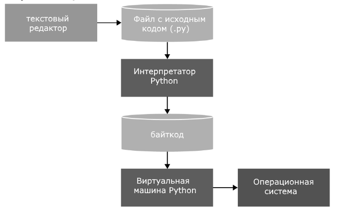

- Язык программирования Python
- Установка Python и первая программа на Windows
- Установка Python и первая программа на MacOS
- Установка Python и первая программа на Linux
- Управление версиями Python на Windows, MacOS и Linux
- Первая программа в PyCharm
- Python в Visual Studio
Глава 1. Введение в Python
Python представляет популярный высокоуровневый язык программирования, который предназначен для создания приложений различных типов. Это и веб-приложения, и игры, и настольные программы, и работа с базами данных. Довольно большое распространение питон получил в области машинного обучения и исследований искусственного интеллекта.
Впервые язык Python был анонсирован в 1991 году голландским разработчиком Гвидо Ван Россумом. С тех пор данный язык проделал большой путь развития. В 2000 году была издана версия 2.0, а в 2008 году - версия 3.0. Несмотря на вроде такие большие промежутки между версиями постоянно выходят подверсии. Так, текущей актуальной версией на момент написания данного материала является 3.12, которая вышла в октябре 2023 года.
Основные особенности языка программирования Python:
Скриптовый язык. Код программ определяется в виде скриптов.
Поддержка самых различных парадигм программирования, в том числе объектно-ориентированной и функциональной парадигм.
Интерпретация программ. Для работы со скриптами необходим интерпретатор, который запускает и выполняет скрипт.
Портативность и платформонезависимость. Не имеет значения, какая у нас операционная система - Windows, Mac OS, Linux, нам достаточно написать скрипт, который будет запускаться на всех этих ОС при наличии интерпретатора
Автоматическое управление памяти
Динамическая типизация
Выполнение программы на Python выглядит следующим образом. Сначала мы пишим в текстовом редакторе скрипт с набором выражений на данном языке программирования. Передаем этот скрипт на выполнение интерпретатору. Интерпретатор транслирует код в промежуточный байткод, а затем виртуальная машина переводит полученный байткод в набор инструкций, которые выполняются операционной системой.
Здесь стоит отметить, что хотя формально трансляция интерпретатором исходного кода в байткод и перевод байткода виртуальной машиной в набор машинных команд представляют два разных процесса, но фактически они объединены в самом интерпретаторе.
Python - очень простой язык программирования, он имеет лаконичный и в то же время довольно простой и понятный синтаксис. Соответственно его легко изучать, и собственно это одна из причин, по которой он является одним из самых популярных языков программирования именно для обучения. В частности, в 2014 году он был признан самым популярным языком программирования для обучения в США.
Python также популярен не только в сфере обучения, но в написании конкретных программ в том числе коммерческого характера. В немалой степени поэтому для этого языка написано множество библиотек, которые мы можем использовать.
Кроме того, у данного языка программирования очень большое сообщество программистов, в интернете можно найти по данному языку множество полезных материалов, примеров, получить квалифицированную помощь специалистов.
Пакеты и библиотеки
Интерпретатор Python сопроваждается достаточным функционалом, который позволяет создавать приложения на этом языке. Тем не менее этого функционала может оказаться недостаточно для ряда задач. Но в виду большого сообщества разработчиков на этом языке по всему миру также имеется большая экосистема различных пакетов и библиотек, которые можно использовать для различных целей. Перечислю основные из них.
Для создания графических приложений:
Tkinter
PyQt / PySide
wxPython
DearPyGui
EasyGUI
Для создания мобильных приложений:
Kivy
Toga
Для создания веб-приложений:
Django
Flask
FastAPI
Pylons
Bottle
CherryPy
TurboGears
Nagare
Для автоматизации процессов:
Selenium (для тестирования веб-приложений)
Flask
FastAPI
Pylons
Bottle
CherryPy
TurboGears
Nagare
robotframework
pywinauto
Lettuce
Behave
Requests
Для работы с различными типами файлов:
OpenPyXL (Excel)
lxml (XML)
ReportLab / borb (PDF)
pdfrw / PyPDF2 (PDF)
Pandas (CSV и Excel)
Для машинного обучения, искусственного интеллекта, Data Science:
Pandas
SciPy
PyTorch
Matplotlib
Theano
Tensorflow
OpenCV
Scikit-Learn
Keras
NumPy
Для визуализации:
Matplotlib
Seaborn
Plotly
Bokeh
Altair
HoloViews